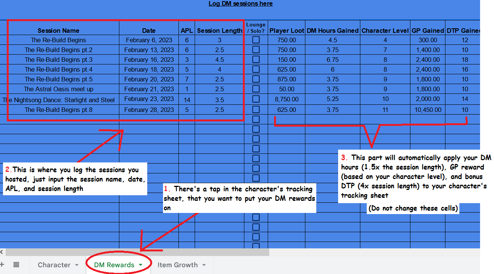

To become a DM, contact a staff member after you have reached Level 4 on a player character to receive the Apprentice DM role. As an apprentice, you will need to host 5 open voice sessions to receive the full DM role.
We recommend posting about yourself in dm-directory while you are an active DM. At any time, you may request the staff team to remove the role if you wish to take a break.

Apprentice DM Restrictions
- Cannot run Perma Death sessions (includes session required items).
- Cannot give out Homebrew Items to players (running homebrew monsters is fine).
How to Earn TRP Roles
- TRP DM: Reach Level 7 OR Run 2 Voice Sessions.
- PBP DM: Run 5 live TRP sessions (Socials do not count).
Running Live Sessions
DMs can run sessions however they see fit. The session focus may vary. All games are run in Session Lobbies and Session Lobby Text under the Live Sessions category (you can choose any free lobby). DMs may use any supplemental materials to run their sessions, such as streaming a tabletop simulator or inserting ambiance via music bots, provided those materials are available to all players.
Players in live sessions are expected to be in-character. You cannot proxy as your in-real-life self, nor host a session for such play. Please use the ooc Misc (Out of Character) voice channels for ooc hanging out, watching movies, or any ooc activity that does not impact PC development.
To run a live session, a DM should post in looking-to-host using the pinned template. Or you can check our looking to host builder in DM tools page or check out how to use discord time stamp (explained below) which we recommend including a Discord Timestamp on your LTH post to overcome time zone misunderstandings.
Pinging Etiquette
- Ping is only allowed for session stuff (like sessions in lth or feelers in lfg or other things related to sessions)
- About pinging starlings, a lot of new players struggle to make a character, proxying would be a nightmare for them, so i recommend making proxying optional for starling sessions
-
Don't ping:
- Multiple times for the same game, but you can ping again after at least 20 mins has passed from your last ping
- Canceling sessions (its really unnecessary, but you can ping the people who signed up instead)
- Roles belonging to tiers below/above your expected player level. Players interested in proxying will assign the appropriate tier roles to themselves.
Example: @tier1 or @tier2
Looking to Host / Session Log Builder
A simple tool to help DMs structure their looking to host and session log posts.
Open DM Tool ↗How to make your Timestamp
This is how you make it show up in others' timezones correctly. Use the tool below to generate the code for Discord:
🔨 HammerTime.cyou
🎵 Music Bot Commands
Here's examples on how to use all of them:
-
Jockie Music
(there's 4 of this one, so if you see it in another lobby, you still can use it with the same command)
m!play https://www.youtube.com/watch?v=dQw4w9WgXcQ - Pancake p!play https://www.youtube.com/watch?v=dQw4w9WgXcQ
- Zandercraft /play https://www.youtube.com/watch?v=dQw4w9WgXcQ
- bongo b.play https://www.youtube.com/watch?v=dQw4w9WgXcQ
- Beats /play https://www.youtube.com/watch?v=dQw4w9WgXcQ
Useful Session Commands
Some commands you might need in your sessions for new players:
- Where to find their folder ==> !folder
- How to log their sessions ==> !tracking
- How the starry shore look like ==> !starry
- The mascot ==> !mascot
- What's proxy? ==> !proxy
- (for trp dms) How to make a tupper ==> !tupper
- For easier sign ups for players if u want, just ask them to do this command to show their character stuff ==> !me
- If you want players to roll for where they are in the shore ==> !shore
-
If you want to see what tiers players are looking for, you can use !tier for all tiers or !tier [numbers] to select specific ones.
ex: !tier 2 3 and it will add the reaction automatically as well - How to sign up and add their token in Owlbear ==> !owl
Session Loot
DMs can offer rewards for their session as they see fit, up to the allowable loot value shown after running the !apl command (explained below) and in the DM Rewards tab of their tracking sheet when they log the session.
- DMs can give less than the allowable loot value. This is a maximum value. Note that DMs cannot give items that are above the character’s tier.
- Homebrew items given as session rewards can only be used in that DM’s world, except at other DMs’ discretion.
How to run the !apl command
Example: your players levels are 3, 6, 4, 12
You do:
It will also show you what's the max GP the session will reward the players.
Session Hours & Tracking
The number of hours played is calculated by rounding to the nearest half hour and the average party level (APL) is rounded to the nearest whole number.
A DM may choose to charge DTP for activities a character participates in during one of their sessions.
Following every session, a DM must post in session-log using the provided template. It is important to do this ASAP following a session.
Please note: in order for the session to be counted or for players to be counted in a session and gain loot and hours, you must host/play for at least one full hour.
How to log the sessions you DM'ed:
DM Rewards
DMs earn rewards to be applied to their own characters when they run live sessions. For a given session, a DM chooses a single character to give these rewards to. Log the session in the second tab of your Character Tracking Sheet, labeled DM Rewards. The session rewards will be automatically added to the character’s hour, gold, and DTP totals.
DMs earn hours for running live sessions at a rate of:
Session Length (in hours rounded to the nearest 30 minutes) x 1.5
DMs earn DTP rewards for running live sessions at a rate of:
Session Length (in hours rounded to the nearest 30 minutes) x 4
DMs earn gold rewards as specified in the DM Rewards tab of your tracking sheet when you log the session.
- This value is determined by the current level of the character that the DM is applying the session to and the length of the session.
- Gold rewards are halved for sessions running less than two hours.
- Gold rewards are multiplied by 1.5 for sessions that run for four or more hours.
The Astral DM
Each 2 weeks, starting at 1st and 15th of each month there will be a reward for the most active DMs.
Chosen by Staff based on:- Feedback from the community
- Number of sessions/hours hosted
- Positive impact on the Starry Shore
Special category above Dungeon Master with role "The Astral DM"
The Cosmic Calendar For DMs
This is for ONE "double rewards" session, it have nothing to do with the normal daily sessions
We're setting up a schedule for DMs every 2 weeks, and DMs can pick their preferred day! (day is determined by your timezone)
One open session you run on that day will hook you up with double rewards (your choice), just for you, not the players!
This is an incentive, not an obligation, so you can register for a day, and not run a session if you don't feel like it, and that's completely fine :D
We’re hoping this will hype up everyone here to run a session every two weeks and with the squad of dms we have, we’ll have plenty of sessions daily with a fresh rotation. And for the active DMs its more rewards bcz you guys deserve it.
- P.S. in order to log them, you just check the double reward box (OR log the session twice if you're using the old version of tracking sheet)
- P.S.2. Noble subscribers can pick 2 days instead of one :D
-
P.S.3. open sessions means you post the lth and random people sign up.
- If you already have selected players or campaigns, these are considered closed sessions
Solo Sessions
DMs may run 1-on-1 sessions with the following restrictions (these are automatically calculated when you check the “solo/lounge” box in the DM tracking sheet):
- Player gold-equivalent loot maximum reduced to ½ of normal maximum allowance.
- DM gold-reward reduced to ½ and be calculated as a player (no "DM multiplier" on gold reward).
This conversion is completed automatically in the DM Rewards.
Astral Oasis Sessions
Sessions taking place within The Starry Shore are referred to as “social sessions.” Normally role-play-centric, they may be set within the fight club, main street, Astral Oasis, VIP buildings, or other parts of The Starry Shore.
These kinds of sessions don't reward players with any gold, and DMs have to log it in their sheets with the box in the middle that says solo/lounge.
⚠️ Closed/Solo/Astral Oasis Sessions Restrictions
There's no "official" limits to how many u can host of these. You might need none, or you might need more than one depending on if its a continuation or character development.
So once or a twice a month when needed is fine, but more than that it become an issue for the long term.
But, if everyone was running solo or closed sessions, new players wouldn't be able to join sessions and the server will die slowly without new players and dms.
TRP Rules
Live TRP sessions grant rewards (hours and gold) at the same rate as standard live sessions.
3 hrs per week x 1.5 DM bonus
= 90 hrs/month max
(equivalent of hosting a 4hr live session every other day / 15 sessions)
- Each TRP/PBP DM can reward up to 5 players (one character each) in their world up to 3h per week, logging it in the DM rewards section to receive the DMing 1.5x bonus. (must participate for the rough equivalent of 3 hours, DM discretion, example below)
- TRP sessions must always be logged as solo sessions, running the APL command with 1 entry will halve the gold; for DMs they need to check the solo box in their tracking sheet, and the logs need to be posted in the trp-session-log channel using the template pinned there :D
- 90h/month max for PBP DMing. This is equivalent to hosting a 4-hour live session every other day (15 sessions/month).
- The content amount required is still the same.
- More players or characters may still join if you allow, but they don't receive rewards.
DM discretion on how they evaluate the rewards, this is just an example and if you need help with that, you can open a ticket.
The 3-hour weekly reward is a maximum limit, not an automatic grant. DMs should award hours based on the actual amount of roleplay a player contributes during that week. If a player roleplays for more than 3 hours, they still only receive the maximum of 3 hours.
Creating and Running a Text Roleplay World
DMs can create a Text Roleplay (TRP) World to interact with player characters. TRP worlds that have been inactive for 60+ days will be archived (and eventually deleted).
To apply for a TRP world, please fill out the following template and post it in trp-world-directory .
**Name of DM:** **World Name and Requested Room Number:** **PvP Allowed (Yes, No, With Consent):** **NSFW (Yes, No):** **Firearms (Yes, No):** **Expected Response Rate (30min, 3hr, Daily, Weekly):** **Player Limit (if any):** **Number of Channels (up to five to start, not including announcements):** **Names and Order of Channels Requested:** **Era/Style (high fantasy, primordial, modern, post-modern, etc):** **Types of Play (combat, intrigue, social, etc):** **2-4 Sentence Description:**